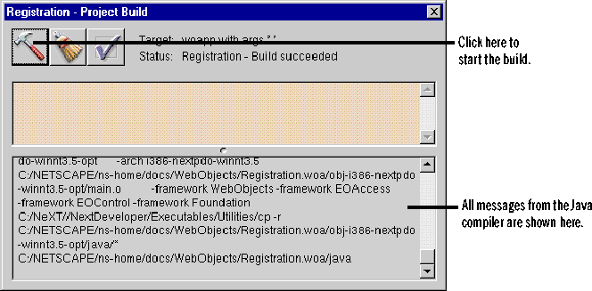

Creating a Compiled Application
 Table of Contents
Table of Contents  Previous Section
Previous Section
Build the application
Now you're ready to build the project.
- Click the Build button to bring up the Build panel.
- In the Build Panel, click the Build button to start the build.

Project Builder starts to compile and link your program. All of the messages from the Java compiler appear in the bottom pane of the Build panel. If you receive a compiler error, it will appear there.
Table of Contents  Next Section
Next Section